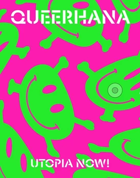
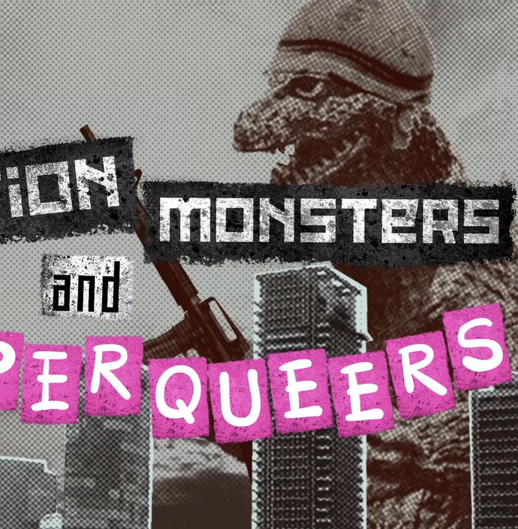

queerhana archives
an archive of public-space queer activism
Yaffa-Tel Aviv, 2000s
principle of permanence
The archive is not a static repository but a living record of defiance. We prioritize the preservation of queer ephemeral history — the protests, the flyers, and the underground networks that institutional archives have historically ignored or erased.
Permanence is a political act. By securing these records, we ensure that the voices of this movement remain accessible to future generations.
radical origins
Queerhana was one of the first queer movements to emerge in Israel-Palestine, founded in Yaffa-Tel Aviv in 2001 out of the reclaim-the-streets actions of the Allenbeach crew. Combining punk, rave culture and direct-action politics, it staged unlicensed parties in reclaimed public spaces, resisting both commercial nightlife and political oppression.
It flourished in parallel to Black Laundry, sometimes sharing events and joining forces, and became a formative gathering point for a generation of activists, artists and social mobilizers across the following decade. Every item here is public access material, published for historical recognition — nothing is for sale.

queerhana: utopia now!
Retrospective book on the movement, published 2017.
Order Now
nation monsters and super queers
Queerhana documentary short, released 2017, on Vimeo.
WatchThe Archive
contribute to the skeleton
The archive is only as strong as its bones. If you have records, stories, or digital artifacts from this movement, help us build a more resilient queer history.
A note on rights and attribution. This archive brings together material collected informally over many years, often without complete records of authorship. We have made a good-faith effort to identify and credit the rights holder of each item. If you believe a credit is missing, incorrect, or if you are the rights holder of any material shown here, please contact us at qharchives@gmail.com — we will review and correct it promptly.